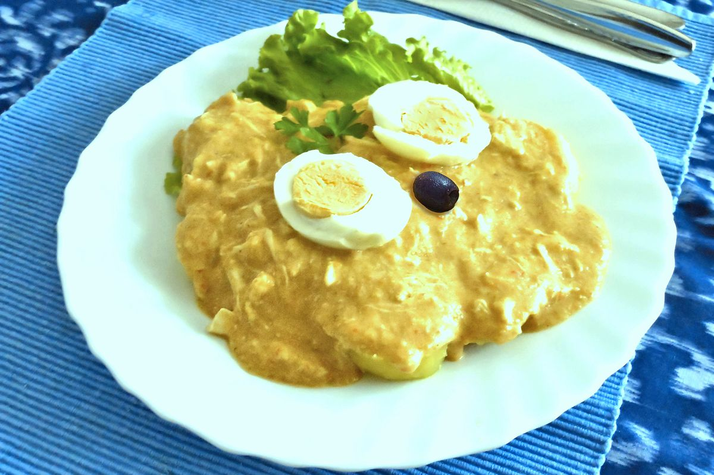

5 secretos de nuestro Ají de Gallina
Descubre por qué nuestro ají de gallina es tan cremoso y lleno de sabor. Utilizamos pan remojado en leche, ají amarillo fresco y una base de caldo de gallina cocinado a fuego lento.
Este plato tradicional peruano se ha perfeccionado en nuestra cocina con un toque moderno: añadimos nueces molidas y queso parmesano para darle una textura única.
Ideal para quienes buscan comfort food con historia, el ají de gallina es una experiencia culinaria que mezcla suavidad, sabor y tradición en cada bocado.